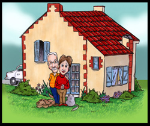
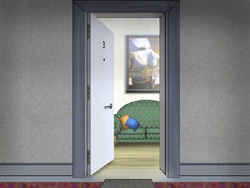
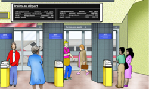

Préparation 3: Être à Paris, C'est Merveilleux!
Langue
Introduction
Function
- Doing things in sequence
- Telling someone where you are
Pronunciation
- Closed é
Structure
- Review être, to be
- Gender (1): adjectives of nationality
- Gender (2): indefinite articles
- Qu’est-ce que c’est?, C’est un/une: Identifying things
1. Conversation
Paul
Regardez! Nous sommes à Paris! Être à Paris, c'est merveilleux!
- Regardez!
- Look!
- nous
- we
- sommes
- are (goes with nous)
- nous sommes
- we are
- à
- in
- Paris
- Paris
- être
- to be
- être à Paris
- to be in Paris
- merveilleux
- wonderful
- c'est merveilleux
- its wonderful, thats wonderful
- Regardez! Nous sommes à Paris! Être à Paris, c'est merveilleux!
- Look! Were in Paris! Its wonderful to be in Paris!
Daniel
Oui, mais sans argent européen.
- mais
- but
- sans
- without
- argent
- money
- sans argent
- without money
- européen
- European
- argent européen
- European money
- Oui, mais sans argent européen.
- Yes, but without any European money.
Paul
Voilà un distributeur automatique. J'ai ma carte de crédit.
- distributeur
- teller machine
- automatique
- automatic
- un distributeur automatique
- an ATM machine
- la carte de crédit
- credit card
- ma carte de crédit
- my credit card
- Voilà un distributeur automatique. J'ai ma carte de crédit.
- Theres an ATM machine. I have my credit card.
Régine
Moi aussi. J'ai seulement des francs suisses, mais pas d'euros.
- moi aussi
- me too, so do I
- seulement
- only
- un franc
- franc (monetary unit of Switzerland)
- des francs
- francs
- des francs suisses
- Swiss francs
- pas de
- no (before a noun)
- un euro
- a euro (new European monetary unit)
- pas d'euros
- no euros
- Moi aussi. J'ai seulement des francs suisses, mais pas d'euros.
- So do I. I have Swiss francs, but no euros.
Daniel
Alors, au distributeur d'abord, et ensuite au café.
- alors
- then, well then, in that case
- d'abord
- first
- au distributeur d'abord
- first to the ATM machine
- ensuite
- then, after that
- au café
- to the café
- Alors, au distributeur d'abord, et ensuite au café.
- Well, then, first to the ATM machine, then to the café.
Paul
D'accord! On y va!
- D'accord!
- OK!
- On y va!
- Lets go!
- D'accord! On y va!
- OK! Lets go!
2. Un peu plus
Langue et Culture 1
French universities are traditionally divided into facultés, or schools, such as la faculté de droit for law school, la faculté de lettres for humanities, la faculté de médecine for medical school, and la faculté de sciences humaines for social sciences. University students attend only one of these schools, which are not necessarily located in the same part of the city. To be at college is être à la faculté, or à la fac for short.
3. Pronunciation Practice
Closed "é"
The sound represented by é in French spelling is called the closed é. It sounds similar to the ay of play in English, but there are some important differences between the English and French sounds.
When you make the sound in English, the position of the lips and tongue shift as the sound is made, producing a diphthong: two vowels pronounced in a single syllable. The sound starts out like the eof bed and finishes as the ee of feed. The French closed é is not a diphthong. The tip of the tongue is pointing at the gum ridge behind the upper teeth, while the mouth is slightly more open than for the sound of i as in il, Régine, or suisse. The position of the tongue, mouth, and lips does not change during the production of the sound.
The vowel sound of the closed é in French is short, tense, and uniform. Listen to the following English words containing the diphthong represented by ay, followed by French words containing é. Note that the French sound é can be spelled in several different ways.
Listen to the following words containing the closed é sound. Repeat each word after the speaker, paying special attention to the é sound.
4. Writing Exercise 1
Review the verb être by completing the written exercise.
In the following paragraph, Daniel discusses foreign students at a French university. Complete the paragraph by filling in the missing subject pronouns with the correct forms of être. Click on the blanks to check your answers.
____
est____
Il____
est____
sont____
Ils____
sont____
Elles____
je____
suis____
sommes____
tu____
es5. Writing Exercise 2
Writing Exercise 2
Complete the responses to each of the following questions. Assume that the person asked about is from the same place and of the same nationality. In some cases, you will have to change the gender of adjectives of nationality or of nouns. Click on the underline to check your answers.
Modèle
Christine est canadienne. Et Jacques? Jacques aussi est canadien.
-
Marc et Hervé sont au restaurant. Et toi et Hélène? Moi et
Hélène, nous aussi, nous
.
_____
sommes au restaurant -
Agnès est française. Et toi, Michel? Moi aussi, je
.
_____
suis français -
Jean-Luc est belge. Et Thérèse et Sylvie? Elles aussi, elles
.
_____
sont belges -
Ton copain est au lycée. Et ta copine? Elle aussi, elle
.
_____
est au lycée -
Paul est ton copain. Et Stéphane? Stéphane aussi
.
_____
est mon copain -
Jacques est étudiant. Et Valérie? Elle aussi, elle
.
_____
est étudiante
La Structure de la Langue 1: Gender
Adjectives of Nationality
Listen to and repeat the following sentences.
The sentences above include examples of French adjectives, such as français/française and américain/américain, and nouns, such as copain/copine and étudiant/étudiante, that use different forms to refer to males and females. Spoken and written French signal the male-female distinction differently.
In written French, you usually make a word feminine by adding the letter e to the masculine form:
| Masculine | Feminine |
|---|---|
| étudiant | étudiante |
| français | française |
| allemand | allemande |
Note also that in French, adjectives of nationality are not capitalized.
In spoken French, the distinction between the masculine and feminine words is different. The feminine words end in a final consonant; to form the masculine, that final consonant is deleted. Listen to the word pairs again. You will hear the feminine form first, then the masculine form. Listen for the loss of the final consonant in the masculine form.
| Feminine | Masculine |
|---|---|
| étudiante | étudiant |
| française | français |
| allemande | allemand |
Adjectives of nationality that end in e in the masculine, use the same form in both speech and writing to refer to males and females. Listen to these pairs of sentences as the speaker reads them.
| Masculine | Feminine |
|---|---|
| Marc est suisse. | Jacqueline est suisse. |
| Jean-Luc est belge. | Nicole est belge. |
Some adjectives of nationality that end in a pronounced consonant in the masculine add e to form the feminine, but have the same pronunciation for both forms.
| Masculine | Feminine |
|---|---|
| espagnol | espagnole |
| e spa gnol | e spa gnole |
Listening Exercise 1
Look at and listen to the following words. Decide if they are masculine or feminine, or can refer to both males and females.
- africaine
- chinois
- espagnole
- coréenne
- belge
- italien
- canadienne
- suisse
6. Oral Exercises 1-2
Oral Exercise 1: Substitution with "être"
Rephrase the sentences based on the cue provided using the verb être (to be). Sentences will require changes in either the form of the verb être, the form of the adjective of nationality, or both.
Modèle:
- Paul et Canadien.
- Marie et Anne
- Marie et Anne sont canadiennes.
- coréen
- Marie et Anne sont coréennes.
Commençons.
Oral Exercise 2: Question and Answer
In the following exercise, a friend asks you if someone is from a certain city. You say "yes," and answer with the corresponding adjective of nationality.
Modèle:
- Philippe est de New York?
- Oui, il est américain.
Commençons.
7. Writing Exercise 3
Comment on each of the following sentences. Assume that the person mentioned in parentheses is of the same nationality as the person in the sentence.
Modèle
Click on the underline to see the answers.
____________
aussi est italienne.
____________
aussi est française.
____________
aussi sont canadiennes.
____________
aussi est américaine.
____________
aussi sont africains.
____________
aussi est anglais.
8. Oral Exercise 3
English to French Meaning Check
Can you say the following sentences and phrases in French? Repeat the French equivalent of each English cue you hear. Repeat the correct response after the speaker.
Modèle:
Commençons.
La Structure de la Langue 2: Gender
The Indefinite Article
The French indefinite article (English a/an) has two forms: un and une. French nouns are divided into two broad classes: those taking the indefinite article un and those taking the indefinite article une. In traditional terminology, nouns requiring un are called “masculine nouns” and nouns requiring une are called “feminine nouns.” The division of nouns into these two categories is called gender. All nouns in French, whether they refer to people or things, belong to one of these two categories.
Nouns and Gender
The following is a list of nouns classed by gender. Repeat each noun after the speaker, paying careful attention to the pronunciation of the indefinite articles un and une. The article will indicate which class each noun belongs to. Note that the masculine article un consists solely of a nasal vowel; the final n is not sounded. In the feminine article une, the final n is sounded.
| Masculine | Feminine |
|---|---|
| un bureau | une carte |
| un café | une école |
| un kiosque | une gare |
| un lycée | une maison |
| un restaurant | une sortie |
If a masculine noun begins with a vowel, the consonant n of un is pronounced in liaison with the word that follows it.
9. Writing Exercise 4
Complete the following sentences with the correct indefinite article: un or une. Click on the underline to check your answers.
-
Voilà
maison.
_____
une -
C'est
distributeur.
_____
un -
Voilà
banque.
_____
une -
C'est
école.
_____
une -
Voilà
lycée.
_____
un -
J'ai
bureau à Paris.
_____
un -
Voilà
immeuble.
_____
un -
C'est
gare.
_____
une -
Tu as
appartement à Paris?
_____
un -
Voilà
restaurant.
_____
un
La Structure de la Langue 3: Identifying Things
A very common exchange involves Qu’est-ce que c’est? — What is it?, What is that? — followed by C’est un / C’est une + noun. C’est un / C’est une + noun is used to identify things.
10. Oral Exercise 4
Qu'est-ce que c'est?
Use the cues to answer the speaker's questions about what these things are. Repeat the correct response after the speaker.
Modèle:
École
Qu’est-ce que c’est? C’est une école.
Commençons.
11. Oral Exercise 5
Words and Pictures
Look at the following pictures and answer the speaker's questions. Repeat the correct response after the speaker.
Modèle:
Qu'est-ce que c'est?
C'est un restaurant.
Commençons.
- 
- 
- 
11. Oral Exercise 6
Words and Pictures
Now look at the following pictures and correct the speaker’s mistaken impression.
Modèle:
Qu'est-ce que c'est? Un café?
Non, c'est un restaurant.
Commençons.